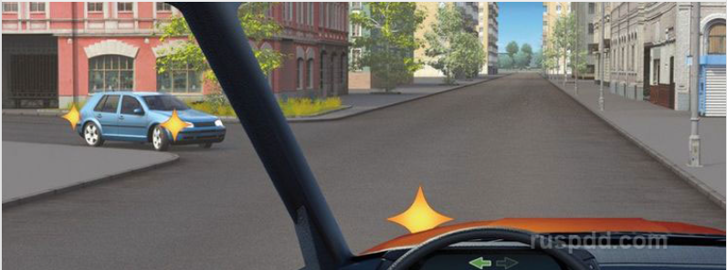
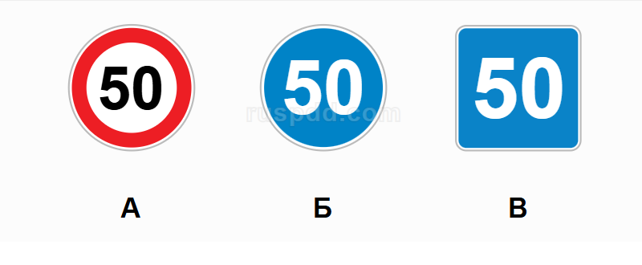
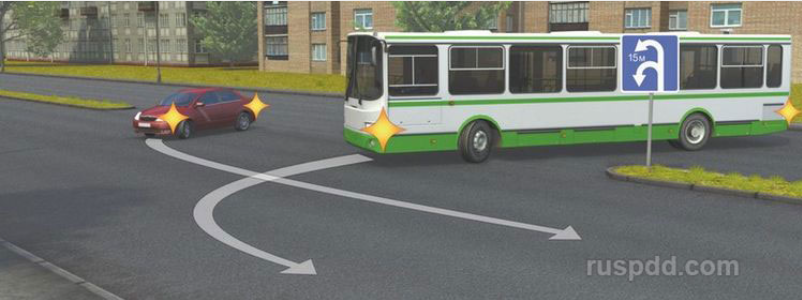
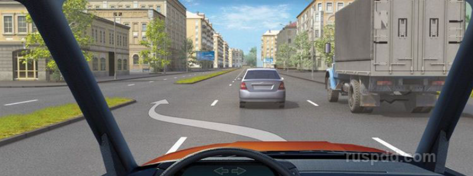
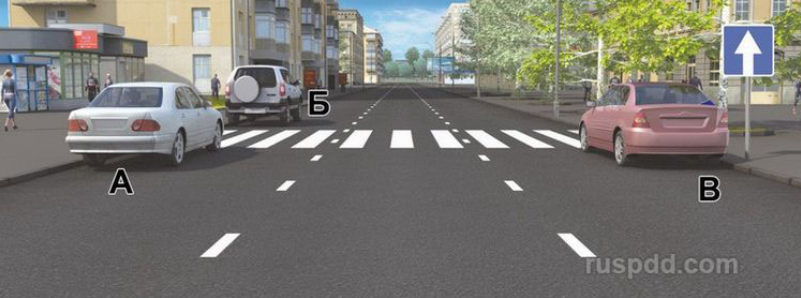
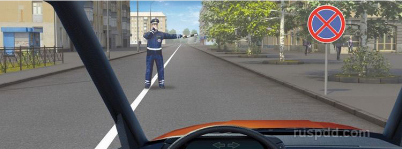
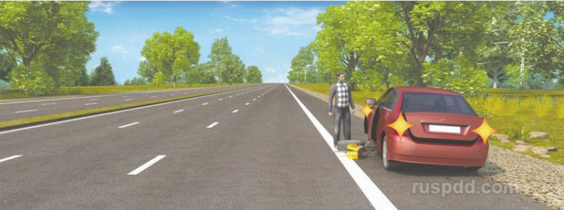
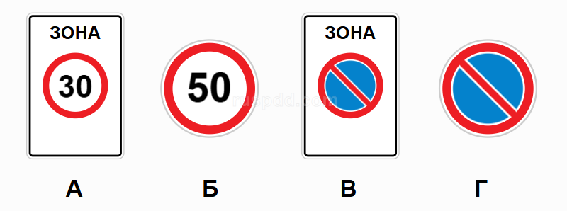

ЭКЗАМЕН СДАН
ЭКЗАМЕН НЕСДАН
О чем информируют эти знаки?
Разрешен ли Вам поворот на дорогу с грунтовым покрытием?
По какой траектории двигается прицеп легкового автомобиля при прохождении поворота?
Разрешено ли Вам остановиться в указанном месте?
Ситуация, в которой водитель транспортного средства, движущегося по правой полосе, обязан уступить дорогу при перестроении, показана:
К резкому торможению можно прибегнуть:
При движении на легковом автомобиле, оборудованном ремнями безопасности, должны быть пристегнуты:
Какие из указанных знаков запрещают движение транспортных средств, скорость которых по технической характеристике или их состоянию менее 40 км/ч?
Сколько транспортных средств Вам можно обогнать одновременно после проезда пешеходного перехода?
Что означает мигание зеленого сигнала светофора?
В каком месте Вам следует поставить автомобиль на стоянку с правой стороны дороги?
Вероятность возникновения аварийной ситуации при движении в плотном транспортном потоке будет меньше, если скорость Вашего транспортного средства:
Сколько пересечений проезжих частей имеет этот перекресток?
При движении в каком направлении Вы обязаны уступить дорогу трамваю?
В каком случае Вы обязаны уступить дорогу грузовому автомобилю?
Этот знак:
При трогании на подъеме на автомобиле с механической коробкой передач следует начинать отключать (отпускать) стояночный тормоз:
Вам разрешено продолжить движение:
С какой максимальной скоростью Вы имеете право продолжить движение на грузовом автомобиле с разрешенной максимальной массой не более 3,5 т?
В каком случае разрешается эксплуатация автомобиля?

Вы намерены развернуться. Ваши действия?
Противотуманные фары и задние противотуманные фонари могут быть включены одновременно:

Вы намерены проехать перекресток в прямом направлении. Ваши действия?

Какие из указанных знаков разрешают движение со скоростью 60 км/ч?

Кто должен уступить дорогу при одновременном развороте?

Разрешается ли Вам, управляя грузовым автомобилем с разрешенной максимальной массой более 2,5 т, выехать на третью полосу в данной ситуации?

Водители каких автомобилей нарушили правила остановки?

Должны ли Вы остановиться по требованию регулировщика в указанном им месте?

Нарушил ли водитель Правила при вынужденной остановке на автомагистрали?

Действие каких знаков из указанных распространяется только до ближайшего по ходу движения перекрестка?